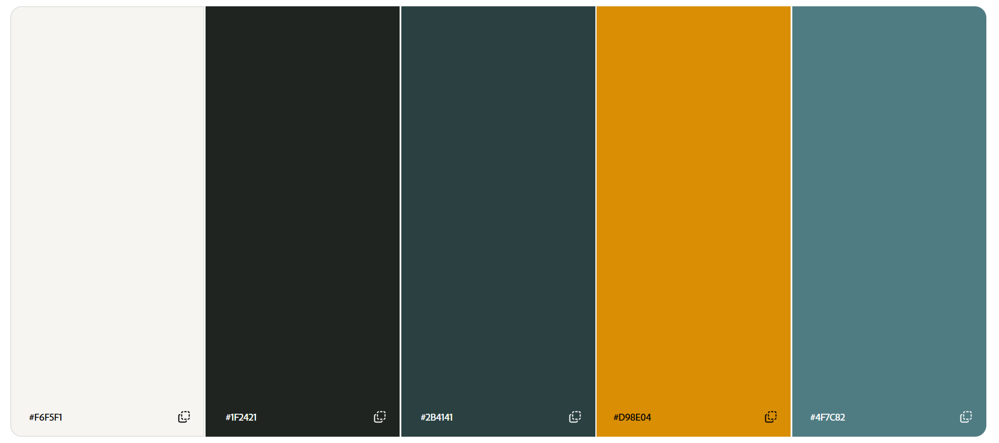

christian@wpi:~$
01 about.yml
- name
- Christian Dell'Anno
- class
- 2027
- major
- Computer Science
- school
- Worcester Polytechnic Institute
02 skills.log
Self-reported experience, compiled on page load.
03 courses.log
| Course | Title |
|---|---|
| CS 1101 | Introduction To Program Design |
| CS 2102 | Object-Oriented Design Concepts |
| CS 3133 | Foundations Of Computer Science |
| CS 3431 | Database Systems I |
| CS 2303 | Systems Programming Concepts |
| CS 2223 | Algorithms |
| CS 3013 | Operating Systems |
| CS 3733 | Software Engineering |
| CS 4233 | Object-Oriented Analysis And Design |
| CS 3041 | Human-Computer Interaction |
| CS 4341 | Introduction To Artificial Intelligence |
| CS 3043 | Social Implications Of Information Processing |
04 palette.png
Color palette generated on color.adobe.com, used throughout this page's CSS.
- paper
- ink
- pine
- amber
- wire
